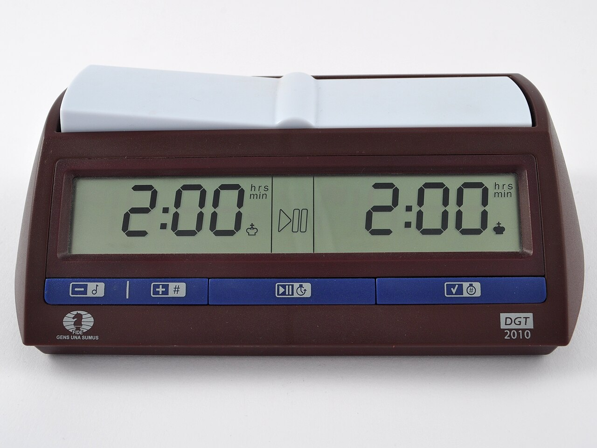

The Three-Rung Principle
Challengers may only issue match slips to players seated 1, 2, or 3 rungs directly above them. Skipping rungs beyond 3 is forbidden to maintain ladder parity and steady progression.
Example club rules, challenge etiquette, and interactive membership answers.
Four example rules for this fictional club.
Challengers may only issue match slips to players seated 1, 2, or 3 rungs directly above them. Skipping rungs beyond 3 is forbidden to maintain ladder parity and steady progression.
Once a match slip is recorded in the system, the defending player has 48 hours to confirm the time or offer an alternate slot within 7 calendar days. Unanswered slips result in a default forfeit.
If the challenger wins the match, they take the defender's ladder rung immediately, and the defender drops down by one rung. In the event of a draw or defender victory, all positions remain unchanged.
All over-the-board club matches enforce FIDE Article 4 touch-move laws. If a player touches their piece, they must move it if legal. Clocks must be pressed with the same hand used to move.
Click any topic below to expand answers. State is toggled via accessible JavaScript.
Students with verified FIDE or Chess.com ratings (above 1600) are seeded directly at the base of their corresponding division. Unrated students play two 15-minute evaluation blitz games during our Saturday meeting in GUK Room 302 to earn an initial provisional ladder rung.
Yes! If both players cannot meet on campus, matches can be contested in the official Satbayev Chess Club team on Lichess. Both players must share their game PGN link in the challenge slip confirmation for Elo verification.
The calculator uses an illustrative K-factor of 20. You can preview an estimated rating shift and expected score using our interactive Elo Calculator on the Ladder page.
The top 8 ladder players at the end of the semester earn automatic entry into the Satbayev University Blitz Championship, with university trophies, official tournament chess sets, and department sports scholarship recommendation points.
Our training room GUK 302 equipped with DGT digital clocks and weighted wooden boards.

